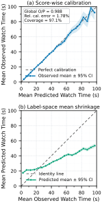
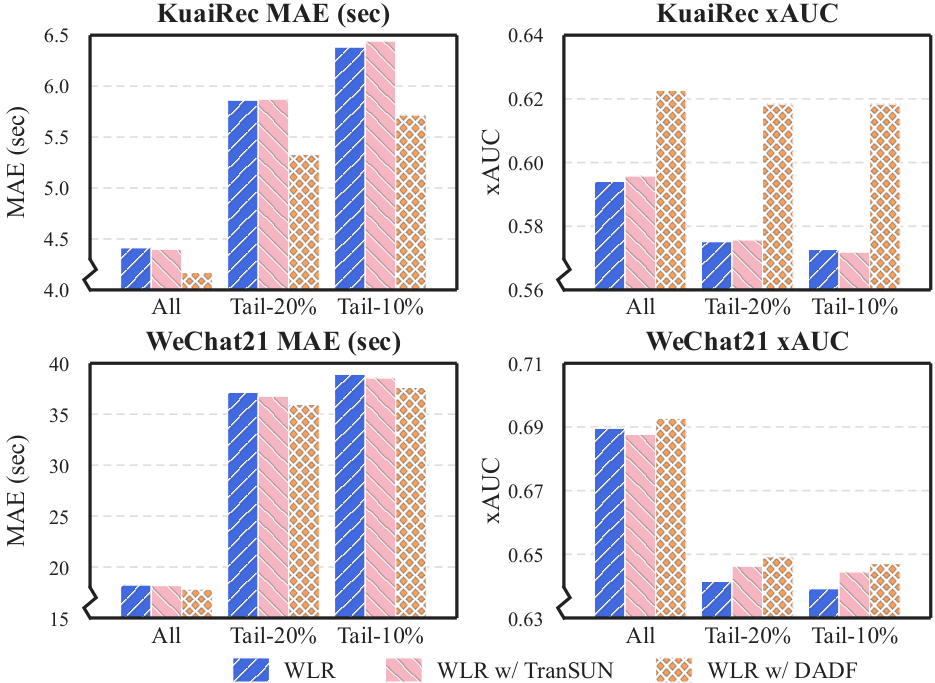

Contents · 11 sections
1What problem is it actually solving?2First, separate two kinds of "bias"3The framework: freeze the original model, learn only a correction multiple4What each of the three modules does5Training objective and serving-time limits6Experiments: the average offline gain comes mostly from weak models7Ablation and the long tail8Online results9My view10How a recommendation team could try it11One-line conclusion and assessmentSHARE
This is worth reading if you work on watch-time prediction for short-video recommendation, especially if your production watch-time model is mature and you do not want to rebuild it. Read it with one question in mind: the average offline gain comes mostly from weak models, and the gains on strong models are much smaller. The problem is that a watch-time model can be accurate overall, yet when you group impressions by how long users actually watched, short views are overestimated and long views underestimated, and these errors shift ranking and exposure. The core idea in one sentence: freeze the existing model, train a small network that predicts how many times the true watch time is relative to the original prediction, and multiply that back in, so the ranking side sees the same interface. Offline, across two public datasets and seven base models, it lowers MAE (mean absolute error) by 4.33% on average; on Kuaishou production logs MAE drops 12.57%, and average time spent per device rises 0.649%, 0.235% and 0.199% in three ranking stages, all now at full traffic. I think the "frozen model plus multiplicative correction" engineering pattern is worth borrowing, while the separate contribution of each of the three modules should be discounted.
What problem is it actually solving?
Watch time is one of the most important continuous targets in short-video recommendation, and it separates a quick swipe, a partial view and a full rewatch better than clicks or likes do. Wrong watch-time estimates change candidate order: overestimated videos get too much exposure, and underestimated deep content gets pushed down. On average these errors may cancel out, but the traffic allocation is already distorted.
A mature production watch-time model is usually tied to the feature pipeline, multi-task training, model refresh and downstream ranking objectives. Replacing it means feature migration, capacity evaluation and interface changes across several serving stages. So the authors choose the least intrusive setting: the original model and the scalar it outputs stay unchanged, a second stage is added after it, and only signals available at serving time are used.
First, separate two kinds of "bias"

This figure is the starting point of the paper and deserves a second look. The left panel asks whether samples the model calls 30 seconds really average 30 seconds, and the answer is roughly yes. The right panel asks the reverse: for samples that were actually watched for 5 seconds, what did the model predict on average? Clearly more than 5 seconds; for samples watched for 200 seconds, the model predicted less. The authors call the latter label-space mean shrinkage.
The two questions condition in opposite directions, so a model can be calibrated on the left and still shrink on the right. Any noisy regression shows this pull toward the mean, and the authors acknowledge that it does not by itself mean the model is biased; part of it is randomness that cannot be predicted at serving time. So the goal narrows to this: beyond the original prediction, do the serving-time features still contain residual that can be predicted? Under squared error, the most the overall mean squared error can fall is the square of the residual's conditional mean given the serving signals, averaged over all samples. If the original prediction already uses all of that information, this ceiling is zero and the correction can learn nothing.
The authors also split by video-duration quartile, and the shrinkage remains in every quartile. This shows the pattern is not just a mix of short and long videos, and duration is later used only as a grouping index, not as the cause of the error.
The framework: freeze the original model, learn only a correction multiple
![Paper Figure 2: the DADF framework. Right side, main path: ranking features go through the shared backbone to get the original watch-time prediction, the video is assigned to duration regime g, a fusion layer combines the original prediction, features, auxiliary behavioral representation and regime embedding, and only regime g's expert is activated. At the top is the per-regime Box–Cox transform, which turns the correction multiple into a more symmetric distribution during training and is inverted at serving time. Left side, the auxiliary behavioral representation: each engagement objective's logit is expanded through several fixed nonlinearities and concatenated with the tower's hidden states.](../../../figs/2026-08-03/personalization/2605.17863/03_framework.png)
DADF (Distribution-Aware Debiasing Framework) trains on a multiple , where is the true watch time, is the frozen model's prediction, avoids dividing by numbers near zero, and no gradient flows back into the original prediction. The correction network predicts a positive number , and the final output is . Downstream still receives one watch-time scalar, so the ranking formula and multi-objective fusion need no changes.
The correction network's inputs include the original prediction, the ranking features, the original model's raw output before its final mapping, and representations of other engagement objectives. True watch time and the other objectives' labels are used only as training supervision and never enter the correction network at serving time.
What each of the three modules does
The first module transforms the target per duration regime. The multiple is itself long-tailed: when the original prediction is tiny and the user watched for a long time, the multiple becomes huge, and direct regression gets dominated by a few extreme samples. The authors learn a Box–Cox parameter for each duration regime to turn into a more symmetric :
At serving time the inverse recovers the multiple, or when . is trained jointly with the correction network. The transform is monotone, so it does not change sample order within a regime. Appendix Figure 7 shows the learned generally decreasing for longer-duration regimes.
Here are a few hand-worked examples with to show how the transform and serving-time clipping behave:
| Original prediction | True watch time | Multiple B | Log-transformed Z | Note |
|---|---|---|---|---|
| 20 s | 8 s | 0.4 | −0.92 | Overestimated, correction pulls down |
| 20 s | 60 s | 3 | 1.10 | Underestimated, correction pushes up |
| 2 s | 150 s | 75 | 4.32 | Outside [−4, 4], excluded from the transformed-space loss |
| any | any | — | — | At serving time the multiple is clipped to 0.1–10 |
The raw multiples span 0.4 to 75, more than two orders of magnitude; after the log they all sit within a few units, so the regression is no longer dominated by extreme samples like the one with a multiple of 75. During training, the transformed-space loss drops samples with outside [−4, 4] or outside [0.001, 100]. At serving time the multiple is limited to [0.1, 10], which means the correction can at most scale the original prediction up by 10 or down to a tenth, and the original model's judgment always remains the base.
The second module hard-routes each impression to an expert by duration regime. Each impression falls into one regime by video duration and activates only that regime's expert network, and the expert sees the full input rather than duration alone. The benefit of hard routing is that serving computes only one expert, with no fan-out. The appendix is candid here: if duration is already an input feature, splitting by it adds no new information and only changes how parameters specialize, so the effect has to be shown by ablation.
The third module adds an auxiliary behavioral representation, because the logits of engagement objectives such as short view, long view and completion often carry states that the watch-time scalar does not express. Each auxiliary logit is expanded into 8 fixed transforms: , , , , , , and . The square root and log are applied after a ReLU, so negative logits cause no trouble. These go into a multilayer perceptron together with each tower's hidden states. The copies entering the correction branch carry no gradient back, so the auxiliary heads are trained only by their own labels. In production it reuses the existing engagement heads of the original model; the public code trains lightweight substitute heads from labels.
Training objective and serving-time limits
The total loss has four terms. The first is mean squared error on in the transformed space, with weight 1.0. The second is a Huber loss between and in the original watch-time space with weight 0.8. The third is a set of moment constraints that push each regime's transformed distribution toward mean 0, variance 1 and skewness 0, with weight 0.05. The fourth is the auxiliary heads' binary classification loss with weight 0.10. The second term ties the transform back to the quantity downstream actually uses, so that is not learned just to make distributions look tidy.
Offline, duration regimes are equal-frequency splits, 4 on KuaiRec and 3 on WeChat21; production uses 4 fixed regimes chosen from historical traffic statistics and engineering experience. Results are fairly stable over a moderate range of regime counts, and splitting too finely leaves each regime with too few samples.
Experiments: the average offline gain comes mostly from weak models
There are two public datasets: KuaiRec has 12.53 million impressions from 7,176 users with very dense interactions, and WeChat21 has 7.31 million interactions from 20,000 users and is sparser. The seven base models cover direct regression, discretization, duration deconfounding and distributional modeling. The comparison is TranSUN (a multiplicative correction method) adapted to the frozen-model setting, and all three share the same frozen checkpoint and random seeds. The metrics are MAE and XAUC, the fraction of sample pairs whose predicted order matches their true order.
The table below picks four representative base models on KuaiRec:
| Base model (KuaiRec) | Base MAE | With DADF | Base XAUC | With DADF |
|---|---|---|---|---|
| VR, direct regression | 4.584 | 4.235 | 0.5578 | 0.6125 |
| TPM, tree-based ordinal decomposition | 4.459 | 4.166 | 0.5495 | 0.6233 |
| D2Q, duration-deconfounded quantile model | 4.123 | 4.106 | 0.6319 | 0.6345 |
| EGMN, exponential–Gaussian mixture model | 4.081 | 4.002 | 0.6245 | 0.6257 |
DADF has the best MAE and XAUC in all 14 combinations, while the adapted TranSUN improves MAE in only 10. But look closely: VR (direct regression) gains 0.055 XAUC and TPM (tree-based ordinal decomposition) gains 0.074, while the strongest originals, D2Q (duration-deconfounded quantile model) and EGMN (exponential–Gaussian mixture model), gain only 0.003 and 0.001, with MAE down just 0.4% and 1.9%. After correction, all seven models land between 0.61 and 0.635 XAUC. So the average 4.01% XAUC gain mostly comes from pulling weak models up to the strong ones; if your production model is already near EGMN's level, plan for something like 1% to 2% MAE offline.
The authors run a capacity control: they grow each base model until it matches the parameter count of "base model plus DADF", which adds 31.79% parameters on average, and XAUC actually falls by 0.0013. This suggests the gain does not come from more parameters but from the two-stage structure of freezing and then fitting the residual.
Ablation and the long tail
On the WLR (weighted logistic regression) base, removing any module makes metrics worse, but only slightly. On KuaiRec the full version has MAE 4.1723; without the target transform it is 4.1901, without duration routing 4.1823, and without the auxiliary representation 4.1865, all within 0.5%. For comparison, WLR's raw MAE is 4.414, so DADF cuts it by about 5.5%, while the adapted TranSUN reaches 4.364. Every single-module ablation is still far better than TranSUN, which means most of the roughly 4.4% gap between DADF and TranSUN does not come from these three modules; it may come from other choices such as fuller inputs and the original-space Huber loss. The paper does not break this down well enough, so the necessity of the three modules should be discounted.

The tail results are more convincing. On KuaiRec the MAE reduction roughly doubles from all samples to the longest 10% of videos (5.48% to 10.43%), and the XAUC gain also grows (4.82% to 7.98%), which means the correction helps most where data is sparsest. By duration bucket, the largest reduction is 23.8% in the 180–200 second bucket. By true watch time, [0, 20) seconds improves by 20.7%, exactly the end of Figure 1 where overestimation is worst. In other words, the correction lands mostly on the two ends where the original model struggles most: very long videos and impressions that are swiped away quickly.
Online results
On production logs, MAE falls 12.57%, and peak-hour MAE goes from 15.78 to 14.43. Each of the three stages gets its own experiment: 7 days of A/A to validate traffic and metrics, then 7 days of A/B where only the treatment enables DADF, with the original model, downstream objective and candidate generation unchanged.
| Metric | Full ranking | Rough ranking | Degraded serving |
|---|---|---|---|
| Avg. time spent per device (primary) | +0.649% | +0.235% | +0.199% |
| Total app time spent | +0.656% | +0.265% | +0.216% |
| Completion rate | +0.467% | +0.075% (not significant) | +2.210% |
| Short-view rate (lower is better) | −0.477% | −0.109% (not significant) | −0.515% |
The primary metric is significant in all three stages, and the platform's null acceptance regions are roughly ±0.12% to ±0.16%. Full ranking gains the most, and completion rate in degraded serving rises 2.21%; my guess is that the original model is weaker in degraded mode, leaving more room for correction. All three are now at full traffic.
My view
Two things are worth borrowing. The first is the engineering pattern: freeze the original model, output only a multiple, keep the interface, and clip the multiple to 0.1–10. Launch risk is low, and if something goes wrong you can switch off the second stage and return to the original state. The second is the diagnostic: plotting both prediction-binned and label-binned curves separates "the model is miscalibrated" from "the model shrinks at both ends", and this works for any continuous target.
Three things deserve doubt. First, the offline average is pulled up by weak models, and strong models gain only 1% to 2%. Second, in the ablation each module contributes under 0.5%, and the large gap to TranSUN is not broken down. Third, the online MAE drop of 12.57% is far larger than offline, and production reuses the original model's existing engagement heads, which gives richer signals than the public offline implementation, so the two numbers cannot be compared directly.
How a recommendation team could try it
- Draw the two diagnostic plots from Figure 1 first. If shrinkage by true watch time is mild, the ceiling for correction is low and there is no need to go further.
- Start with the simplest version: freeze the original model, train a small network to regress from the original prediction, raw features and existing engagement-head logits, add a Huber loss in the original space, and clip the multiple at serving time. See how much MAE and XAUC it buys.
- If it helps, add the per-regime transform and duration routing one at a time, each compared against multi-seed controls to make sure the gain is not noise.
- Online, look first at metrics for the two ends, long videos and quick swipes, and then at time spent per device.
One-line conclusion and assessment
The most borrowable idea here is: without touching the original watch-time model, learning just a clipped multiplicative correction lets you ship gains to full traffic with the interface unchanged.
| Dimension | Assessment |
|---|---|
| Problem importance | High. Watch-time estimates directly drive ranking and exposure, and mature models are hard to replace |
| Novelty | Medium. Multiplicative correction has precedent; per-regime transforms, hard routing and auxiliary representations are common components |
| Evidence | Medium to high. Seven base models, two datasets and three online stages, all at full traffic; but gains on strong models are small and the module breakdown is thin |
| Engineering cost | Low. One extra second-stage network, only one expert active at serving time, interface unchanged |
| Worth trying | Yes. Start with the simplest version and verify the per-regime transform and routing one at a time |
| Where it fits | Recommendation ranking systems that already have a mature watch-time or other continuous-target model and want a low-risk incremental improvement |
How did this read for you?
Hoot made a note. Thanks for the feedback.
One tap, no sign-in; tap again to undo. Only anonymous counts are kept, never who you are.
Discussion
Add experiment details, reproduction notes or a different take. Requires a GitHub sign-in.
Loading the discussion…